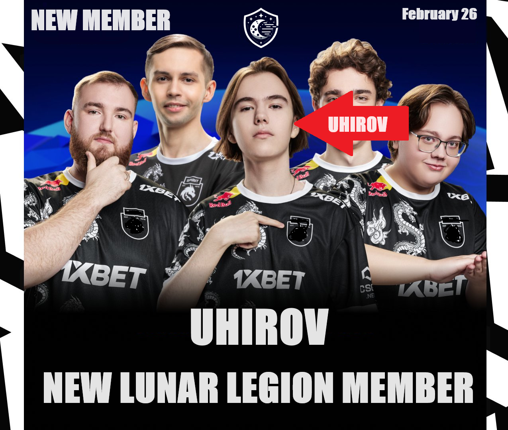

A new member takes the place of a substitute player
New young talent who is ready to conquer the incident. After long conversations, Ukhirov joined the team as a reserve player. In the near future, new hydrocarbons will be created, in which the inclusion of Uhirov in the main team will be discussed. We will keep an eye on the new player.